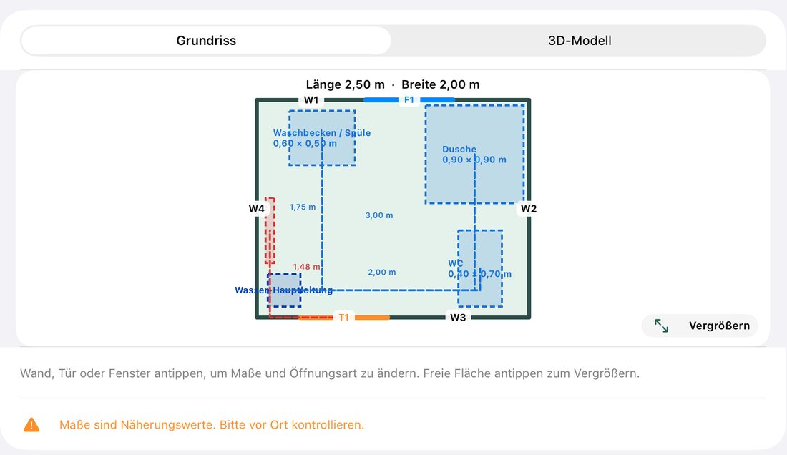
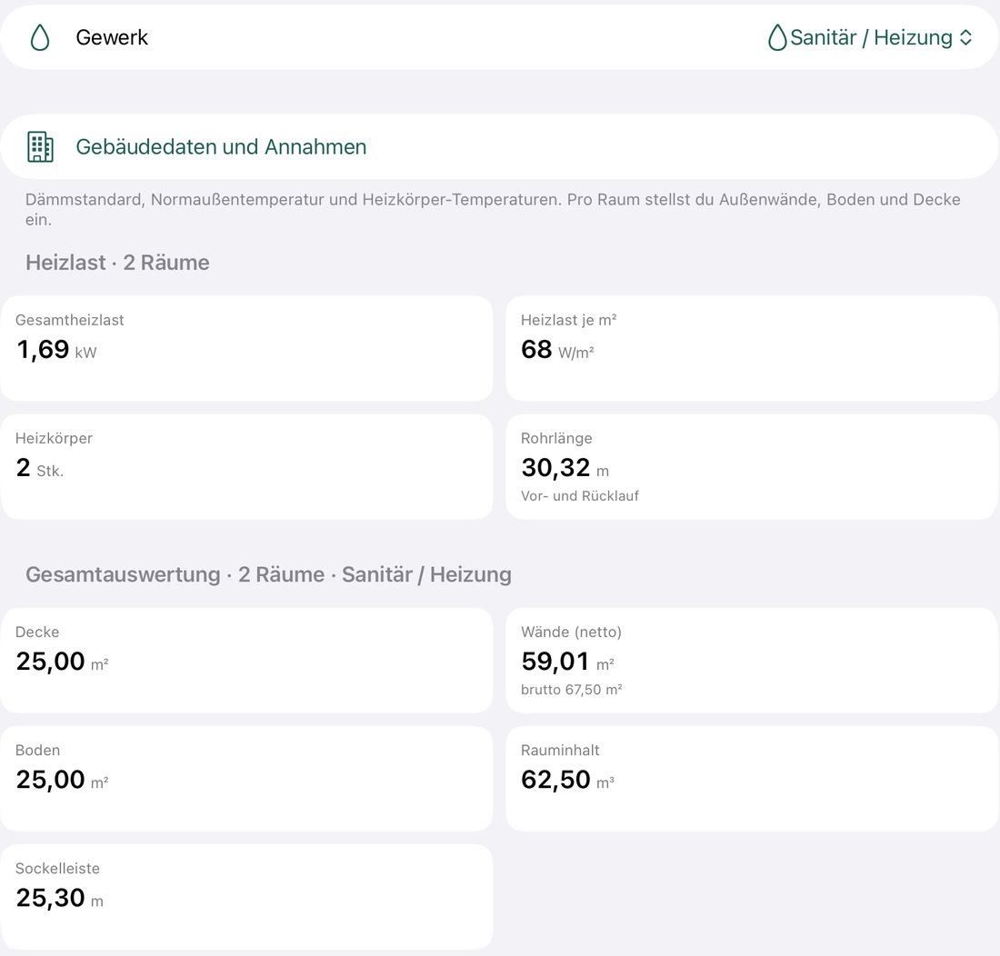

Help
Everything about Rastivo, from the first scan to the quote as a PDF. Search for a term or pick a chapter.
Getting started
What you need
- For the automatic room scan, an iPhone or iPad with a LiDAR sensor (iPhone Pro from 12 Pro, iPad Pro with LiDAR).
- Without LiDAR, you can add rooms manually with length, width and height. Every other feature works too.
- No account needed. All data stays on your device.
Supported devices
For the automatic room scan you need a device with a LiDAR scanner and iOS or iPadOS 17 or later.
iPhone
- iPhone 12 Pro / 12 Pro Max
- iPhone 13 Pro / 13 Pro Max
- iPhone 14 Pro / 14 Pro Max
- iPhone 15 Pro / 15 Pro Max
- iPhone 16 Pro / 16 Pro Max
- iPhone 17 Pro / 17 Pro Max
- iPhone 18 Pro / 18 Pro Max
iPad
- iPad Pro 11" (2nd generation, 2020)
- iPad Pro 11" (3rd generation, 2021)
- iPad Pro 11" (4th generation, 2022)
- iPad Pro 11" M4 (2024)
- iPad Pro 11" M5 (2025)
- iPad Pro 12.9" (4th generation, 2020)
- iPad Pro 12.9" (5th generation, 2021)
- iPad Pro 12.9" (6th generation, 2022)
- iPad Pro 13" M4 (2024)
- iPad Pro 13" M5 (2025)
Not suitable for scanning (no LiDAR): iPhone without Pro, iPad Air, iPad mini, standard iPad, iPad Pro 11" (1st generation, 2018) and iPad Pro 12.9" (3rd generation, 2018). On these devices you can add rooms manually.
How the app is organized
At the bottom there are two tabs: Projects with your measurements, and Settings for deduction rules, trade, prices, company header and backup.
A project is, for example, an apartment or a job. It holds any number of rooms. Each room has a floor plan, areas, objects, notes and photos.
Try it out: the example project
While you have no projects yet, tap View example project. Later you'll find it under Settings → About the app → Add example project. It contains a living room and a bathroom with radiators and plumbing fixtures, so you can try the floor plan, heating and quote even without a LiDAR device.
Before your first real job, set up your company header and price list. Then your PDFs and quotes are ready to send right away.
Projects
Create a project
- In Projects, tap New project.
- Enter a project name and, optionally, the customer.
- Tap Create.
The project card shows the total area and the number of rooms.
Edit and delete
Swipe a project card to the left or press and hold it. Then choose Edit (name, customer) or Delete. Deleting removes the project and all of its rooms, and the app asks you to confirm.
Project trade
At the top of a project, choose under Trade which evaluation is shown. Default uses the trade from Settings. See Trades and scope of work.
Project summary
The Project summary shows the totals of all rooms, such as ceiling, walls (net and gross), floor, slopes, volume and baseboard. Which values appear depends on the trade.
Scanning a room (LiDAR)
- Open a project and tap + at the top right.
- Enter a name, e.g. “Living room”.
- Tap Scan with LiDAR.
- Walk slowly once through the room and point the camera at every wall, door and window. The app shows at the bottom what it has already detected.
- Tap End scan. The app then takes over length, width, height, floor area and floor plan.
- Check the values and tap Save.
Tips for a good scan
- Move slowly and turn steadily. Show every wall fully once, including corners and alcoves.
- Point the camera at the walls, not only at the floor. Otherwise the room height is missing.
- Make sure there's good light. Mirrors, large glass surfaces and very dark rooms make detection harder.
- Staircases are detected as an object. You decide later in the room how they count towards the areas (see Staircase).
Automatically measured values are approximations. Please verify them on site before you bill them.
Adding a room manually
Without LiDAR, or for simple rectangular rooms, enter length, width and height in the Add room dialog. The app calculates the floor area. Enter dimensions in meters, or in feet with imperial units.
You can change the name and dimensions in the room at any time with Edit.
Floor plan and 3D model

At the top of a room, switch between Floor plan and 3D model.
- Floor plan: Tap a wall, door or window to change its dimensions and type. Enlarge (or tapping an empty area) opens the floor plan full screen, where you zoom with two fingers and pan with one.
- 3D model: Rotate with one finger. Zoom and pan with two.
Numbering
Walls are numbered clockwise: W1, W2 …, doors with T and windows with F. The same numbers appear in the wall list and in the PDF, so every row can be matched to the plan.
Changing a wall, door or window
Tapping one opens a panel with Dimensions and notes. Apply saves your changes, and all areas are recalculated.
- Dimensions: width and height. Windows also have a sill height (SH), and walls have length and height.
- Reveal: Enter a reveal depth in cm. Above 0, the app adds the reveal area to the net wall area (doors: 2 × height + width, windows: perimeter).
- Door or window type: 1 or 2 leaves, opens inward or outward, hinge side left or right (seen from inside). Leaves and swing arcs appear in the floor plan, the 3D model and the PDF.
- Delete an opening: If the scan detected, say, a towel as a window, remove it with Delete Window or Delete Door.
- Reset to scanned dimensions restores the original values.
Areas and key figures
Under Key figures, each room shows these values, depending on the trade:
| Value | Meaning |
|---|---|
| Ceiling | Flat ceiling area |
| Walls (net) | Wall area minus openings, plus reveals. The gross area appears below it. |
| Wall tiles | Net wall area up to the set tile height (tiling) |
| Floor / floor tiles | Floor area, plus “Floor + waste” when a waste allowance is set |
| Slopes | Area of the sloped ceilings |
| Room volume | Volume of the room |
| Baseboard / base tiles | Wall perimeter minus door widths |
| Ceiling + walls | Total to paint (painter) |
| Reveals | Reveal areas, already included in the walls |
| Knee wall / room height | With sloped ceilings, the lowest wall height. Otherwise the mean room height. |
Wall list
Under Walls, each wall is listed with length, height, gross and net area. Below that are its doors and windows, with the deduction or the note “no deduction”.
Sloped ceilings
If a slope is detected, the Sloped ceiling section shows knee-wall height, maximum room height, the angle and area of each slope, and the flat ceiling. The values are based on the profile of a reference wall and assume a constant cross-section.
Staircase
If a staircase was detected, choose under Staircase: Do not consider, Upward (deducts the ceiling opening) or Downward (deducts the floor opening).
Waste
If a waste surcharge above 0 % is set in Settings, the room also shows floor, wall and ceiling area including waste. These values appear in the PDF too.
Trades and scope of work
The trade decides which values appear in the project, PDF and CSV. Set the default under Settings → Trade. Each project can use a different trade.
| Trade | Evaluation |
|---|---|
| General | All values |
| Painter | Walls, ceiling (incl. slopes), optionally floor. Also “Ceiling + walls” |
| Flooring | Floor and baseboard, optionally with waste |
| Tiling | Floor tiles, wall tiles up to the tile height, base tiles |
| Plumbing / heating | Heating load, radiators, pipe and water line lengths, materials list |
| Electrical | Outlets, switches, light points, cable lengths, materials list |
Scope of work per room
For painter, flooring and tiling, tap Scope of work below the room (in the room list) or inside the room. There you choose which parts are worked on, e.g. walls only or floor only.
- If every part is switched off, the room isn't worked on by this trade and doesn't appear in the evaluation.
- Apply this scope to all rooms copies the selection to the whole project.
Tile height
Tiling uses a tile height. Set the default in Settings. Each room can have its own height, e.g. 1.20 m in a hallway and 2.10 m in a bathroom. Without its own value, a room uses the project height.
Plumbing / heating

1. Set the building data
In the project, tap Building data and assumptions:
- Insulation standard (old building unrenovated, partially renovated, standard GEG, new build/KfW). It sets the U-values for walls, windows, roof and floor.
- Design outdoor temperature, e.g. −12 °C.
- Flow and return temperature. They determine radiator size, e.g. 55/45 for a heat pump and 70/55 for an older building.
- Heat-up allowance: 0 for continuous operation, otherwise e.g. 10–15 W/m².
- Supply line per room (pipe): the distance from the manifold to the room.
2. Set up the rooms
In the room list, tap the line with the drop icon below a room. There you set:
- Room use (e.g. living, bathroom, hallway). It determines room temperature and air change rate.
- Each wall: interior wall, exterior wall or wall to an unheated room. Walls with a window start out as exterior walls. Please check them!
- Floor (ground, unheated basement, heated room below) and ceiling (heated room above, unheated attic, roof/outside air)
- Radiators and plumbing fixtures (see Objects). Place radiators under windows puts the suggested radiators under the windows of the exterior walls.
Under Result you see the total heating load and the load per m², the radiators, the pipe size and length, and the water line.
Hiding the heating load
The simplified heating load per DIN EN 12831 is mainly relevant in Germany. Use Settings → Show heating load (DIN EN 12831) to show or hide it. Radiators and pipes stay visible.
All values are estimates for material planning and don't replace a calculation by a qualified engineer.
Electrical
Building data
Under Building data and assumptions, set the supply line per room (average cable length from the distribution board) and the reserve on cable lengths in %. You also choose whether outlets are calculated with 3×2.5 mm² instead of 3×1.5 mm².
Fixtures per room
In the room list, tap the line with the lightning icon below a room:
- Room use and lighting (ceiling spots, light outlet or none)
- Number of outlets, switches and light points. These are suggestions based on room use and area, and you can change them with the steppers. Reset to suggestion restores them.
- Appliances such as stove/oven (5×2.5) or dishwasher/washing machine (3×2.5) as objects. They replace the standard cable allowances.
Cables lists cable lengths per type, including the reserve. The project also shows a Cable list for all rooms.
Estimates only. The design is up to a qualified electrician.
Objects
Objects include staircase, radiator, WC, washbasin/sink, bathtub, shower, stove, oven, dishwasher, washing machine/dryer, refrigerator, and the connection points main water line, heating connection/manifold and electrical distribution board.
- Add: Tap Add object in the room or in the heating/electrical view.
- Move and rotate: Tap an object, in the list or in the floor plan. The arrows move it, and the middle button rotates it by 90°. Choose the Step size (1, 5, 10 or 25 cm) above.
- Delete: Delete object in the same panel.
Pipe and cable lengths are recalculated after every change. They are measured at right angles from the nearest connection point in the room, otherwise from the first door. Without a connection point, the room's supply line is added.
Notes and photos
You can save a note and photos for every room, wall, door and window, for example about water damage, a crack or an outlet to be moved.
- Room: section Notes and photos → Room: note and photos
- Wall, door, window: tap it in the floor plan and switch to the notes section at the top
- Take photo opens the camera. Choose from library adds up to 5 pictures at once.
Notes and photos appear in the PDF on their own pages when the Notes and photos option is on.
Price list and quote
Set up the price list
- Open Settings → Price list and quote.
- Choose the trade and enter prices for the items. You can rename items, switch them on or off, or add new ones with Add item.
- Under Terms, set the VAT and how many days the quote is valid.
- Under Texts in the quote, write an introduction and a closing text.
Quantities come from the measurements automatically: scope of work per room, waste and placed objects. A “lump sum” counts as 1 and only appears when it has a price.
Create a quote
- In a project (or a room), tap the share icon at the top right, then Create quote ….
- Check the items and, if needed, enter a Discount in %. Net, VAT and gross are calculated right away.
- With Show prices turned off, the PDF lists only items and quantities, e.g. for staff or site management.
- Tap Create PDF and share it via Mail, Messages or the Files app.
Export and sharing

The share icon at the top right opens the export menu. In a project it exports all rooms, and in a room just that one.
| Format | Content |
|---|---|
| Floor plan with dimensions and areas. For a project, also a summary and separate pages for each selected room | |
| Materials list (PDF/CSV) | Pipes, fittings, cables and quantities (plumbing/heating and electrical only) |
| Quote (PDF) | See Price list and quote |
| CSV (Excel) | Summary, detail table of all rooms, or the table of one room |
| DXF (CAD) | Floor plans for CAD software |
PDF options
Before creating the PDF, choose what goes into it:
- Floor plan: wall dimensions, interior walls, wall and opening numbers, door dimensions, window dimensions with sill height (SH)
- Areas and dimensions: wall areas per wall, floor and ceiling area, volume, sloped ceilings
- Extra pages: company header, notes and photos, technical report, Only content for the trade (hides e.g. the ceiling for flooring)
- Project: summary table, materials list and the rooms that get their own pages
CSV and DXF are always metric, even when the app shows imperial units.
Settings
| Setting | Effect |
|---|---|
| Trade | Default trade for new projects and the default tile height |
| Backup | See Backup |
| Price list and quote | Prices per trade, VAT, validity, quote texts |
| Units | Automatic (follows your region), metric (m, m²) or imperial (ft, ft²). Values are always stored in metric. |
| Show heating load | Shows or hides the heating load per DIN EN 12831 |
| Company header for PDF | Logo, company name, contact person, address, contact details and an extra line (e.g. tax ID). Appears at the top right of every PDF page. A landscape logo with a transparent or white background works best. |
| Deduct openings | Doors and windows up to this size aren't deducted from the wall area. 0 = every opening is deducted. Which limit applies is set by your contract. |
| Baseboard | Calculate baseboard: wall perimeter minus door widths |
| Waste | Surcharge in %. Areas are also shown including waste. |
Reset to default resets the deduction rules, baseboard and waste. Under About the app you'll find privacy, legal notice, support and the version number.
Number fields take the value only when you leave the field or tap “Done”. When you tap a field, the old value is selected so you can type over it.
Backup and restore
Your projects live only on your device. Set up a backup so you don't lose them if the device is lost or replaced.
Set up a backup
- Open Settings → Backup.
- Tap Choose folder … and pick a folder in the Files app, e.g. in iCloud Drive, Google Drive, Dropbox or OneDrive. That app must be installed on the device. Rastivo creates a subfolder named “Aufmass-Sicherung” there.
- Under Back up automatically, choose Off, When leaving the app, Daily or Weekly.
- Under Versions to keep, set how many versions are kept per project (1–30).
Back up now backs up right away. The backup includes each project in its own folder, plus the photos, the company logo and your settings (deduction rules, company details, default trade, price list).
iOS doesn't allow fixed background times. The automatic backup starts when you open or leave the app and the interval has passed. Only changes are backed up.
Restore
- Open Settings → Backup → Restore …
- Choose a project, then the version you want.
- Restore project replaces the project on the device, or creates it if it's missing. Add as copy leaves the existing project unchanged.
Restore settings brings back your deduction rules, company details and default trade, e.g. on a new iPhone.
Troubleshooting and FAQ
“LiDAR not available”
Your device has no LiDAR sensor. Add the room manually (see Adding a room manually) or try the features with the example project.
“Scan not completed” or no room height
The scan returned no usable dimensions, usually because the walls weren't in view. Start the scan again, move more slowly and point the camera at the walls, not only at the floor. Make sure there's good light.
A window or door was detected by mistake
Tap the opening in the floor plan and choose Delete Window or Delete Door. You can correct wrong dimensions in the same panel.
The dimensions differ from my tape measure
Scanned values are approximations. Correct individual walls and openings in the floor plan, or the room dimensions with Edit. For billing, your own measurements on site apply.
The export icon is grayed out
The project has no rooms yet. Add a room first.
“Materials list” is missing from the export menu
The materials list is only available for plumbing/heating and electrical. Change the project's trade.
The quote has no items, or all prices are 0
There are no prices yet for the project's trade. Enter them under Settings → Price list and quote.
A room is missing from the evaluation
In the room's scope of work, every part is switched off for this trade. Switch at least one back on.
The value I typed isn't applied
Number fields take the value only when you leave the field or tap “Done”.
Where is my data, and how do I delete it?
Only on your device. Delete projects in the app. Deleting the app also removes its stored data. A backup lives in the folder you chose, and you need to delete it there yourself.
Are the calculations binding?
No. Dimensions, heating load, material and cable lengths are estimates and must be checked on site.
Still have questions?
Write to enzym.plane.7q@icloud.com. Please include the app version (Settings → About the app) and your device model. More under Support.
No results. Try another term or write to us.